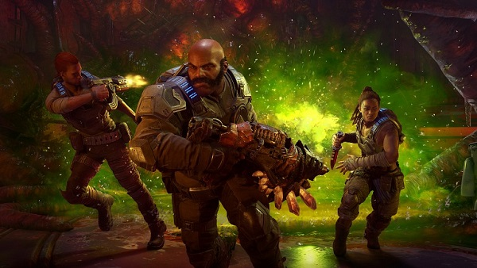

Gears 5 ofrecerá cooperativo a pantalla partida incluso en PC
También se comentan algunos detalles técnicos de la versión de ordenador
Durante la conferencia de Microsoft para el E3 2019, The Coalition reveló el modo Escape de Gears 5. Se trata de una nueva experiencia cooperativa que rivalizará con el clásico modo horda, y cualquiera que haya jugado a este sabrá lo adictivo que puede ser jugar a pantalla partida. Afortunadamente, parece ser que incluso la versión de PC nos permitirá disfrutar del multijugador local para hasta tres jugadores, según confirmaban sus responsables durante la conferencia de AMD.
Rod Fergusson y Mike Raynor de The Coalition confirmaron también algunas características técnicas para esta versión del juego: podremos reproducirlo a una resolución máxima de 4K con HDR, y por supuesto, tendrá una tasa de imágenes por segundo desbloqueada. Además, indican que la nueva Xbox (Project Scarlett) lleva integrado un hardware muy similar al que ya usamos habitualmente para jugar en PC.
Gears 5 estará disponible el 10 de septiembre en Xbox One y PC que operen mediante Windows 10. Si te hace mucha ilusión y no te preocupa aflojar la cartera, ya puedes echar un ojo a su imponente edición de coleccionista.
Takagi Show
@Takagi Show desde mi casa 2019-2019 Todos los derechos reservados SOBRE TAKAGI SHOW